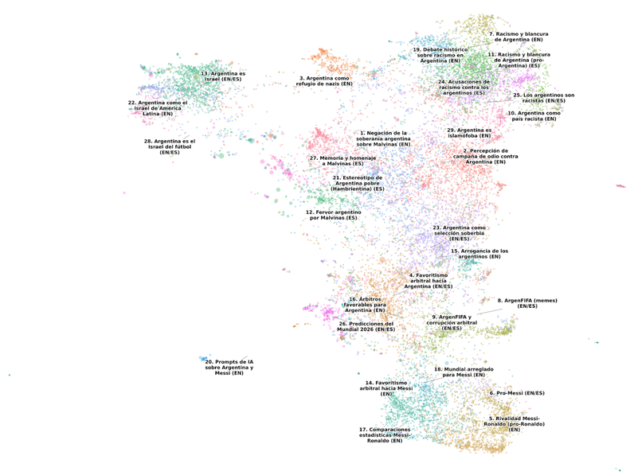
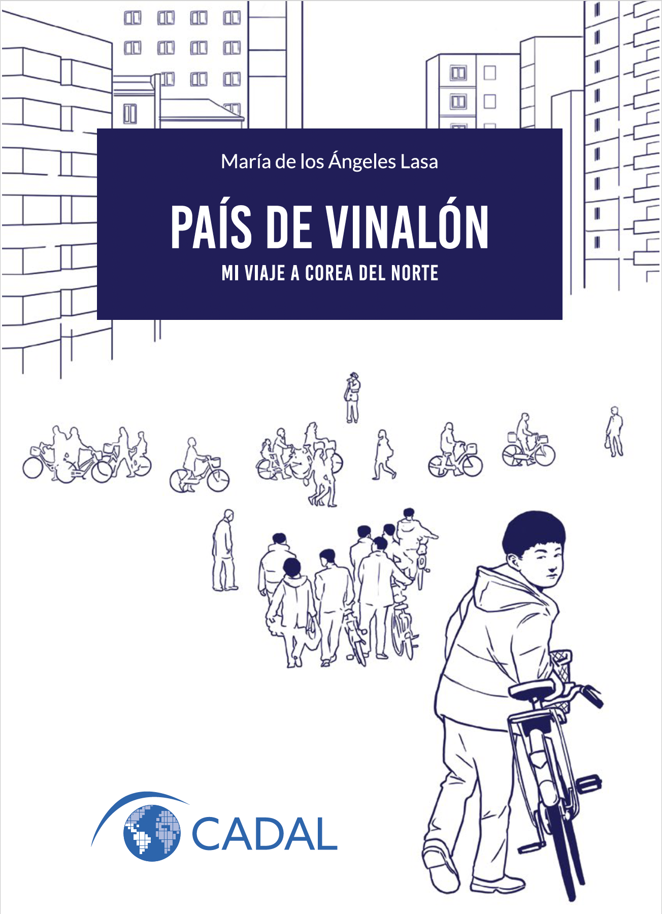

Sobre mí
Recorrido académico y profesional
María de los Ángeles Lasa (1986) es Licenciada en Relaciones Internacionales por la Universidad Católica de Córdoba (UCC-Jesuitas), Magister en Políticas Públicas por la University of Oxford y Doctora en Ciencia Política por la Università degli Studi di Camerino, con especializaciones en Ciencias Sociales Computacionales (UNSAM), Analítica Geoespacial (FLACSO Argentina) e Inteligencia Artificial (UAustral).
Su trabajo se sitúa en la intersección entre el análisis político, las ciencias sociales computacionales y la ciencia de datos, combinando métodos computacionales y enfoques mixtos de investigación para estudiar fenómenos sociales y políticos complejos como la desinformación, la polarización, el comportamiento colectivo y las narrativas políticas.
Como analista de cooperación internacional primero, y en roles directivos después, ha trabajado para organismos internacionales y para el sector público argentino en sus tres niveles de gobierno. Actualmente se desempeña como Gerenta de Ciencia de Datos Aplicada en el Laboratorio de Datos del Global Fund for Women.
Fue Investigadora Visitante en la University of Texas at Austin y en la Universidad de Los Andes de Colombia, Profesora Invitada en la Universidad Torcuato Di Tella, Profesora Adjunta en la Universidad Comunera de Paraguay y Profesora Asistente en la Universidad de San Andrés. Asimismo, integró el Grupo Joven y el Grupo de Trabajo sobre Corea en el Consejo Argentino para las Relaciones Internacionales (CARI). Actualmente es Consejera Académica sobre Asuntos Norcoreanos en el Centro para la Apertura y el Desarrollo de América Latina (CADAL) e Investigadora Asociada en el Centro de Estudios Coreanos de la Universidad Nacional de La Plata.
Parte de su producción académica y ensayística se ha centrado en los totalitarismos, Corea del Norte y las formas en que las sociedades construyen sentido político. En 2024 publicó su primer libro, País de vinalón: mi viaje a Corea del Norte (Fundación CADAL), reeditado en 2025 por Editorial EDUVIM, donde figuró entre los cinco títulos más vendidos del año.
Es autora de escritos galardonados en prestigiosas competencias nacionales e internacionales, incluyendo el Concurso Internacional de Ensayos del Banco Mundial (Estocolmo, 2010), el Concurso Internacional de Ensayos Ideas4Action del Instituto del Banco Mundial (Bruselas, 2010), el Concurso Internacional de Ensayos para Jóvenes de UNESCO y la Goi Peace Foundation (Tokyo, 2010), el Premio de Ensayos Wings of Excellence de la Universität St. Gallen (St. Gallen, 2011), la Competencia Nacional de Ensayos sobre la Península Coreana organizada por la Embajada de la República de Corea en Argentina (Buenos Aires, 2022), y el XXXVI Premio de Literatura Luis José de Tejeda en la categoría Crónicas de Viajes (Córdoba, 2023).
Fue reconocida como Joven Líder por el German Marshall Fund of the United States (2013), por el St. Gallen Symposium (2013), por la Cámara de Comercio de Córdoba (2015) y por JCI Argentina (2023). En 2016 fue oradora TEDx en la Universidad Católica de Córdoba y en la Biblioteca Nacional de Buenos Aires.
Ha sido becaria de Fundación Carolina, el Ministerio de Educación del Gobierno de Italia, Comisión Fulbright, Chevening, Erasmus+ y la Maison de L’Argentine en París.
María de los Ángeles Lasa (1986) holds a Bachelor's Degree in International Relations from the Catholic University of Córdoba, a Master of Public Policy from the University of Oxford, and a PhD in Political Science from the University of Camerino, with specializations in Computational Social Science (UNSAM), Geospatial Intelligence (FLACSO Argentina), and AI (UAustral).
Her work sits at the intersection of political analysis, computational social science, and data science, combining computational methods and mixed-methods research approaches to study complex social and political phenomena such as disinformation, polarization, collective behavior, and political narratives.
She began her career as an international cooperation analyst and later moved into leadership roles, working for international organizations and the Argentine public sector at all three levels of government. She currently serves as Applied Data Science Manager at the Global Fund for Women's Data Lab.
She was a Visiting Researcher at the University of Texas at Austin and at the University of Los Andes in Colombia, Visiting Lecturer at Torcuato Di Tella University, Associate Professor at UCOM in Paraguay, and Assistant Professor at the University of San Andrés. She was also a member of the Youth Group and the Korea Working Group at the Argentine Council for International Relations (CARI). She currently serves as Academic Advisor on North Korean Affairs at the Center for the Opening and Development of Latin America (CADAL) and as Associate Researcher at the Center for Korean Studies at the National University of La Plata.
She is the author of award-winning essays in prestigious national and international competitions, including the World Bank International Essay Competition (Stockholm, 2010), the Ideas4Action International Essay Competition of the World Bank Institute (Brussels, 2010), the UNESCO and Goi Peace Foundation International Essay Contest for Young People (Tokyo, 2010), the Wings of Excellence Award at the St. Gallen Symposium (St. Gallen, 2011), the National Essay Competition on the Korean Peninsula organized by the Embassy of the Republic of Korea in Argentina (Buenos Aires, 2022), and the XXXVI Luis José de Tejeda Literary Prize in the Travel Writing category (Córdoba, 2023).
In 2024, she published her first book, País de vinalón: mi viaje a Corea del Norte (CADAL Foundation), reissued in 2025 by EDUVIM Press, where it ranked among the top five best-selling titles of the year.
She was recognized as a Young Leader by the German Marshall Fund of the United States (2013), the St. Gallen Symposium (2013), the Córdoba Chamber of Commerce (2015), and JCI Argentina (2023). In 2016, she was a TEDx speaker at the Catholic University of Córdoba and at the National Library of Argentina.
She has received scholarships from Fundación Carolina, the Italian Ministry of Education, the Fulbright Commission, Chevening, Erasmus+, and the Maison de l'Argentine in Paris.
Proyectos de datos
Desarrollados con R & Python
 El que domina, nomina
Un análisis sobre poder, género y nomenclatura urbana.
El que domina, nomina
Un análisis sobre poder, género y nomenclatura urbana.
 Primogénitos
La Teoría del Orden de Nacimiento y los presidentes argentinos
Primogénitos
La Teoría del Orden de Nacimiento y los presidentes argentinos
 Cheddar, lechuga y bits
La geopolítica de las hamburguesas en código binario
Cheddar, lechuga y bits
La geopolítica de las hamburguesas en código binario
 Seguime que te sigo
¿Qué nos dicen las cuentas de Twitter de los políticos?
Seguime que te sigo
¿Qué nos dicen las cuentas de Twitter de los políticos?
 500 metros
Breve análisis sobre el "radio recreativo" de la cuarentena
500 metros
Breve análisis sobre el "radio recreativo" de la cuarentena
 Core Values I
Estudio sobre polarización afectiva en Colombia: audiencias online
Core Values I
Estudio sobre polarización afectiva en Colombia: audiencias online
 Core Values II
Estudio sobre polarización afectiva en Colombia: audiencias offline
Core Values II
Estudio sobre polarización afectiva en Colombia: audiencias offline
 Claro como el agua
Análisis de datos del Embalse de Río Tercero, Córdoba (AR)
Claro como el agua
Análisis de datos del Embalse de Río Tercero, Córdoba (AR)
 Sobre llovido, mojado
Precipitaciones en la cuenca alta del Río Tercero, Córdoba (AR)
Sobre llovido, mojado
Precipitaciones en la cuenca alta del Río Tercero, Córdoba (AR)
 ¿Qué año es en Corea del Norte?
El Calendario Juche meets Python
¿Qué año es en Corea del Norte?
El Calendario Juche meets Python
 ¿Es verde mi ciudad?
Mapeo de espacios verdes en Villa María, Córdoba (AR)
¿Es verde mi ciudad?
Mapeo de espacios verdes en Villa María, Córdoba (AR)
 La calle habla
Análisis geoestadístico de protestas sociales en Argentina
La calle habla
Análisis geoestadístico de protestas sociales en Argentina
 Mapa de la protesta social en Argentina
Shiny App con datos de ACLED
Mapa de la protesta social en Argentina
Shiny App con datos de ACLED
 Metros cuadrados
Modelos de regresión para analizar precios de propiedades en Chile
Metros cuadrados
Modelos de regresión para analizar precios de propiedades en Chile
 Decoding North Korea
What 1,238 headlines reveal about the cult of Kim Jong Un
@Botonauta
Un bot sobre historia política desarrollado con Python & ChatGPT
Decoding North Korea
What 1,238 headlines reveal about the cult of Kim Jong Un
@Botonauta
Un bot sobre historia política desarrollado con Python & ChatGPT
 @LunesMarxista
Mensajes proletarios impresos en papel térmico
@LunesMarxista
Mensajes proletarios impresos en papel térmico
 Conclavólogo
Análisis de datos y pronósticos para la rosca vaticana 2025
Conclavólogo
Análisis de datos y pronósticos para la rosca vaticana 2025
 Días de miércoles
La dinámica semanal de la protesta social en Argentina
Corea del Norte en el EPU
¿Se puede predecir la postura norcoreana en el Consejo de Derechos Humanos?
Días de miércoles
La dinámica semanal de la protesta social en Argentina
Corea del Norte en el EPU
¿Se puede predecir la postura norcoreana en el Consejo de Derechos Humanos?

Cien mil moscas Discursos de odio contra Argentina en la Copa del Mundo 2026País de vinalón
Mi viaje a Corea del Norte

Edición non-profit editada en 2024 por el Centro para la Apertura y el Desarrollo de América Latina (CADAL).

Edición comercial publicada en 2025 por Editorial EDUVIM, que se posicionó entre los cinco títulos más vendidos del año.
Charlas & clases
Selección de presentaciones
 TEDxUCC
Ajedrez global: la coronación del peón (2016)
TEDxUCC
Ajedrez global: la coronación del peón (2016)
 TEDxRecoleta
La década becada (2016)
TEDxRecoleta
La década becada (2016)
 WiDS Córdoba
Pensar lo público desde la Ciencia de Datos (2023)
WiDS Córdoba
Pensar lo público desde la Ciencia de Datos (2023)
 csv,conf,v8
Diseño e implementación del SM-Index (2024)
csv,conf,v8
Diseño e implementación del SM-Index (2024)
 Goodbye Lenin!
Las últimas fronteras del socialismo: Corea del Norte (2025)
Goodbye Lenin!
Las últimas fronteras del socialismo: Corea del Norte (2025)
 Nerdearla
Scrapear a Kim, vectorizar al Papa: datos para entender al poder (2025)
Nerdearla
Scrapear a Kim, vectorizar al Papa: datos para entender al poder (2025)
¿Preguntas o comentarios?
Escribime, te respondo a la brevedad